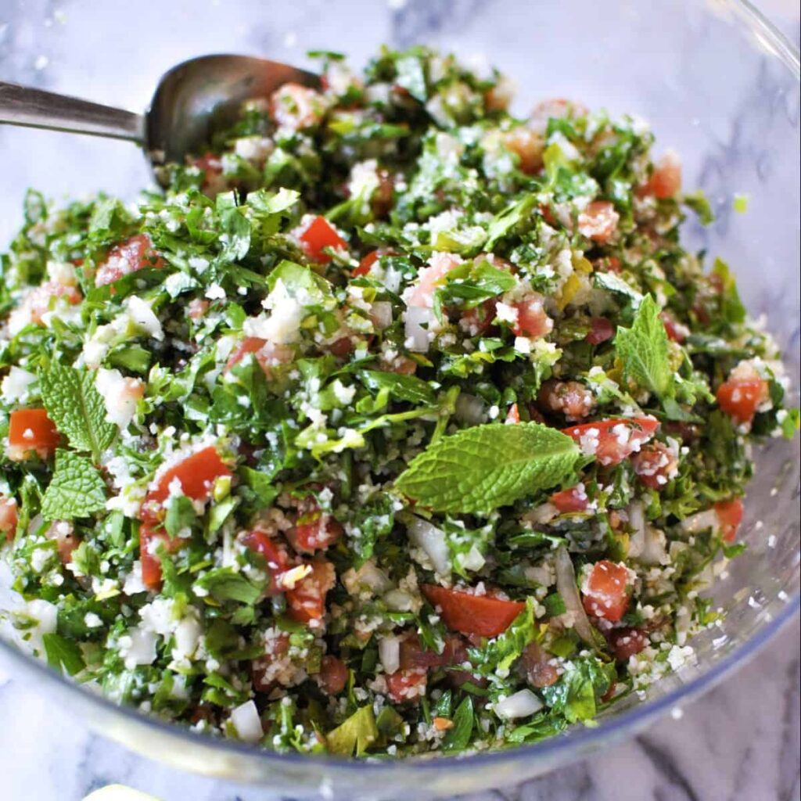

Home
Tabbouleh

Description
Tabbouleh is a simple and super fresh salad that's made of parsley, tomatoes, and bulgur grain.
It is an absolute staple in Lebanese cuisine and a delicious meal.
This salad is packed with flavor from very few ingredients. It's so fresh and light
that makes it work as a side salad for most meals, especially other Mediterranean dishes,
like Kefta and samke Harra. Bulgur is traditionally found in authentic Lebanese Tabouli, it's
a grain that we use in other dishes as well, such as Kibbeh.
Ingredients
- 2 bunches of parsley
- 3 large tomatoes
- 3/4 cup fine bulgar wheat
- 1 bunch shallot
- 1/3 cup extra virgin olive oil
- 2 lemons
- 1/4 cup chopped mint leaves
- 1 teaspoon salt
- 1/4 teaspoon black pepper
Steps
- Rinse bulgur under running water in a fine strainer for about 30 seconds.
- Add the bulgur to a pot of simmering water, and cook for about 5 minutes uncovered. Turn off the pot and let sit for an additional 10 minutes.
- Finely chop the parsley, discard the bottom of the stems, and add the parsley to a large bowl.
- Finely chop the tomatoes and shallots and add to the bowl.
- Once the bulgur is cooled, add to the salad along with mint, lemon juice, olive oil, salt and pepper. Mix to combine and transfer to a serving dish.